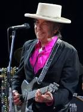
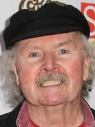

MUZIKA FOLK
Muzika folk është një zhanër muzikor që përfshin muzikën tradicionale popullore dhe zhanrin bashkëkohor që
evoluoi nga e para gjatë ringjalljes popullore të shekullit të 20-të. Disa lloje të muzikës popullore mund
të quhen muzikë botërore. Muzika popullore tradicionale është përcaktuar në disa mënyra: si muzikë e
transmetuar gojarisht, muzikë me kompozitorë të panjohur, muzikë që luhet në instrumente tradicionale, muzikë
për identitetin kulturor ose kombëtar, muzikë që ndryshon midis brezave (proces popullor), muzikë e lidhur
me një popull. folklori ose muzika e kryer sipas zakonit për një periudhë të gjatë kohore. Ka qenë në
kontrast me stilet komerciale dhe klasike. Termi filloi në shekullin e 19-të, por muzika popullore shtrihet
përtej kësaj.
Disa nga artistet me te famshem:
- Bob Dylan
- The Weavers
- Phil Ochs
- Joan Baez
- Harry Belafonte
- Tom Paxton
- Joni Mitchell
- Judy Collins
Bob Dylan
Robert Allen Zimmerman - ose Bob Dylan, siç e njohin shumica - është nga Duluth, Minesota. Gjatë një qëndrimi
në Universitetin e Minesotës, Dylan u fut në temën bohemiane të Minneapolis dhe gjeti muzikën popullore. I
riu i frymëzuar ndryshoi mbiemrin në Dylan dhe u zhvendos në lindje. Dylan u fut në qarkun muzikor në New
York City, mblodhi një sërë mbështetësish dhe nënshkroi me Columbia Records. Stili dhe tingulli i tij hutuan
shumë kritikë, por goditi një akord me dëgjuesit e rinj. Nga të gjithë kantautorët që kanë kontribuar në
evolucionin e muzikës popullore amerikane, muzika e Dylan ka dallimin e paraqitjes së disa prej teksteve
më poetike në kanunin muzikor, duke përfshirë "Blowin' in the Wind" dhe "Tambourine Man".

Tom Paxton
I lindur në vitin 1937, Thomas Richard Paxton është një tjetër këngëtar i famshëm popullor me një karrierë
të vendosur. Ai mori një diplomë për artet e bukura dhe, pas një qëndrimi në ushtri, mori një punë si
nëpunës daktilografie. Për t'i mbajtur gjërat interesante, Paxton filloi të shkruante këngë në makinë shkrimi.
Dhe ndërkohë që karriera e tij në daktilografi nuk qëndroi, krijimtaria muzikore mbeti. Shumë nga këngët e
Paxton u botuan në revista të njohura të muzikës popullore. Duke çimentuar më tej rolin e tyre në
ringjalljen popullore, këngëtarë të tjerë filluan t'i performonin ato.

Judy Collins
E lindur në vitin 1939, Judy Collins filloi në muzikën popullore duke kënduar këngët kryesore të kohës,
kryesisht këngë nga Seeger, Guthrie dhe Dylan. Nga vitet 1970, ajo kishte një reputacion për këngët e
saj të paharrueshme dhe lirike, duke përfshirë "Albatross" dhe "Faewell to Tarwathie". Karriera e Collins
u ngrit, dhe ashtu siç u rrit, po ashtu u rrit edhe aktivizmi i saj. Ajo u bë më e hapur ndërsa fitoi një
bazë muzikore në botë.